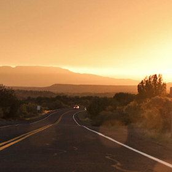
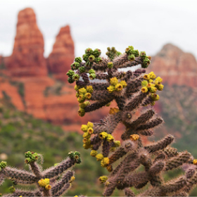
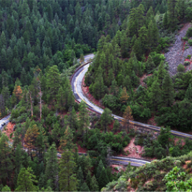
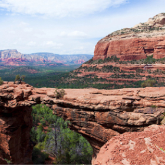

Фото-галерея
Фото и видео
Не можете решиться на путешествие из-за курса? Фотографии помогут вам забыть о политике и экономике.
-
 Неродные просторы
 1350
1350 -
 Местная растительность
143 -
 Дорога на север
96 -
 Мост дьявола
254
Все еще сомневаетесь?
Смотрите видеопрезентацию и скорее за билетами, пока они не подорожали в очередной раз!